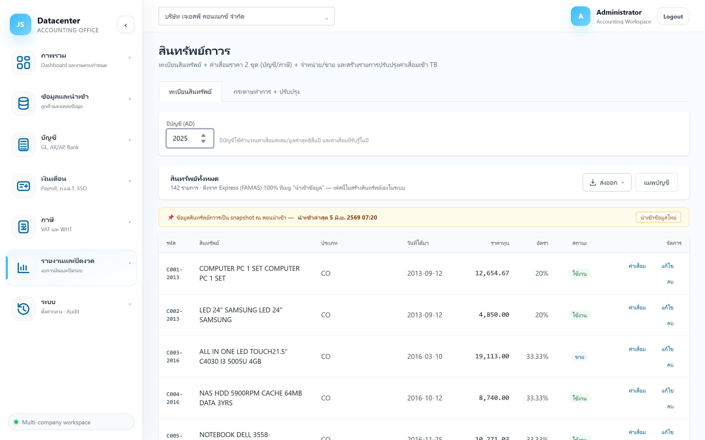
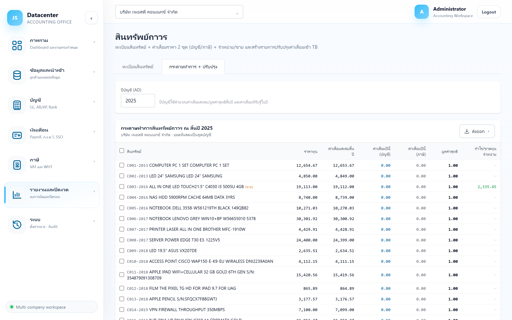

สินทรัพย์ถาวร
ทะเบียนสินทรัพย์จาก Express (FAMAS) + คำนวณ ค่าเสื่อมราคา 2 ชุด (บัญชี / ภาษี) + การจำหน่าย/ขาย และ สร้างรายการปรับปรุงค่าเสื่อมเข้างบให้อัตโนมัติ
ชุดบัญชี ใช้ออกงบการเงินตามอายุการใช้งานจริง · ชุดภาษี ใช้ตามอัตราที่สรรพากรกำหนด — ถ้าสองชุดต่างกัน ส่วนต่างจะกลายเป็นรายการ บวกกลับ/หักออกใน ภ.ง.ด.50
1. การเข้าใช้งาน
- เลือกบริษัทลูกค้า ที่แถบด้านบน
- เปิดเมนู รายงานและปิดงวด → สินทรัพย์ถาวร
- กรอก ปีบัญชี (ค.ศ.) — ใช้คำนวณค่าเสื่อมสะสม มูลค่าสุทธิสิ้นปี และค่าเสื่อมที่รับรู้ในปี
2. แท็บ “ทะเบียนสินทรัพย์”

| คอลัมน์ | ความหมาย |
|---|---|
| รหัส / สินทรัพย์ | รหัสและชื่อสินทรัพย์จาก Express |
| ประเภท | ประเภทสินทรัพย์ ใช้จัดกลุ่มในหมายเหตุประกอบงบ |
| วันที่ได้มา | วันที่เริ่มคิดค่าเสื่อม |
| ราคาทุน | ราคาซื้อ/ต้นทุนของสินทรัพย์ |
| อัตรา | อัตราค่าเสื่อมต่อปี |
| สถานะ | ใช้งานอยู่ หรือจำหน่าย/ขายแล้ว |
| ค่าเสื่อม / แก้ไข / ลบ | ปุ่มท้ายแถว (ดูด้านล่าง) |
นำเข้าอัตโนมัติจาก FAMAS ตอนนำเข้าข้อมูล — รวมค่าเสื่อมสะสมยกมาด้วย ถ้าไม่มียอดยกมา ค่าเสื่อมจะเพี้ยนทันที
ปุ่ม “ค่าเสื่อม” (ตารางค่าเสื่อมรายตัว)
เปิดตารางค่าเสื่อมของสินทรัพย์ตัวนั้น แยกเป็น ชุดบัญชี และ ชุดภาษี แต่ละชุดแสดง ค่าเสื่อมสะสมต้นปี · ค่าเสื่อมปีนี้ · ค่าเสื่อมสะสมสิ้นปี · มูลค่าสุทธิ
ฟอร์มแก้ไขสินทรัพย์
| กลุ่มข้อมูล | ช่อง |
|---|---|
| ข้อมูลทั่วไป | ประเภทสินทรัพย์, วันที่ได้มา, หมวด (Express), สถานะ |
| ราคาทุนและอัตราค่าเสื่อม | ราคาทุน, มูลค่าซาก, อัตราบัญชี (%/ปี), อัตราภาษี (%/ปี) |
| ยอดยกมา | ค่าเสื่อมสะสมยกมา และ ปีของยอดยกมา |
| บัญชี GL ที่ผูก | บัญชีสินทรัพย์ (ราคาทุน), ค่าเสื่อมราคาสะสม (contra)*, ค่าเสื่อมราคา (P&L)* — ใช้ตอนสร้างรายการปรับปรุง |
ช่องที่ระบบเขียนว่า “แก้ที่นี่ไม่ได้” คือค่าที่ซิงก์มาจาก Express — ต้องแก้ที่ต้นทางแล้วนำเข้าใหม่
ปุ่ม “แมพบัญชี”
ตั้งบัญชี GL ตามหมวดสินทรัพย์ทีเดียว แทนการตั้งทีละตัว — ระบบใช้ค่านี้เป็นค่าตั้งต้นเวลาสร้างรายการปรับปรุง
3. แท็บ “กระดาษทำการ + ปรับปรุง”

3.1 ตารางกระดาษทำการรายตัว
| คอลัมน์ | ความหมาย |
|---|---|
| ราคาทุน | ต้นทุนของสินทรัพย์ |
| ค่าเสื่อมสะสมสิ้นปี | ค่าเสื่อมสะสมถึงสิ้นปีที่เลือก (ชุดบัญชี) |
| ค่าเสื่อมปีนี้ (บัญชี) | ค่าเสื่อมที่รับรู้ในงบการเงินปีนี้ |
| ค่าเสื่อมปีนี้ (ภาษี) | ค่าเสื่อมตามเกณฑ์ภาษี — ใช้เทียบเพื่อหาส่วนต่างสำหรับ ภ.ง.ด.50 |
| มูลค่าสุทธิ | ราคาทุน − ค่าเสื่อมสะสม |
| กำไร/ขาดทุนจำหน่าย | สำหรับสินทรัพย์ที่ขาย/ตัดจำหน่ายในปีนั้น (มีป้าย “(ขาย)” ต่อท้ายชื่อ) |
3.2 สรุปตามประเภทสินทรัพย์
รวมยอดตามประเภท (จำนวน · ราคาทุน · ค่าเสื่อมปีนี้ · ค่าเสื่อมสะสมสิ้นปี · มูลค่าสุทธิ) — ตัวเลขชุดนี้ใช้ตรงกับหมายเหตุประกอบงบการเงิน เรื่องที่ดิน อาคารและอุปกรณ์
3.3 เทียบยอดกับ GL
| คอลัมน์ | ความหมาย |
|---|---|
| บัญชี / บทบาท | บัญชีที่ผูกไว้ และบทบาท (ราคาทุน / ค่าเสื่อมสะสม / ค่าเสื่อม P&L) |
| ตาม schedule | ยอดที่คำนวณได้จากทะเบียนสินทรัพย์ |
| ตาม GL | ยอดจริงในสมุดบัญชี |
| ผลต่าง | ส่วนที่ต้องอธิบายหรือปรับปรุง |
ยังไม่ได้แมพบัญชี GL — กดปุ่ม “แมพบัญชี” ที่แท็บทะเบียนสินทรัพย์ก่อน
3.4 สร้างรายการปรับปรุงค่าเสื่อม
- ติ๊กเลือกสินทรัพย์ ที่ต้องการรับรู้ค่าเสื่อม (ติ๊กหัวตารางเพื่อเลือกทั้งหมด)
- กด สร้างรายการปรับปรุง (จำนวน)
- ระบบสร้างใบปรับปรุงพร้อมเลขที่เอกสาร แล้วแจ้งยอดค่าเสื่อมรวม
- ตรวจใบนั้นได้ที่ กระดาษทำการปิดงบ
ระบบไม่ได้กันการสร้างซ้ำ — ถ้ากดสองครั้งจะได้ใบปรับปรุง 2 ใบและค่าเสื่อมถูกบันทึกเป็น 2 เท่า ให้ไปลบใบที่ซ้ำที่หน้ากระดาษทำการปิดงบ
3.5 จำหน่าย / ขายสินทรัพย์
ปุ่ม สร้างรายการตัดจำหน่าย/ขายสินทรัพย์ (ใช้ได้เมื่อมีสินทรัพย์ที่จำหน่ายในปีนั้น)
| ส่วนที่แสดง | ความหมาย |
|---|---|
| สินทรัพย์ / สถานะ / วันจำหน่าย | รายการที่จำหน่ายในปีนั้น |
| ราคาทุน / มูลค่าสุทธิ / ราคาขาย | ตัวเลขที่ใช้คำนวณ |
| กำไร/ขาดทุน | ราคาขาย − มูลค่าสุทธิ |
| บัญชีกำไรจากการจำหน่าย * | บัญชีปลายทางกรณีมีกำไร (บังคับ) |
| บัญชีขาดทุนจากการจำหน่าย * | บัญชีปลายทางกรณีขาดทุน (บังคับ) |
4. ปัญหาที่พบบ่อย
| อาการ | สาเหตุและวิธีแก้ |
|---|---|
| ขึ้น “ยังไม่มีสินทรัพย์” | ยังไม่ได้นำเข้าจาก Express — ไปที่เมนูนำเข้าข้อมูล |
| ค่าเสื่อมสะสมดูสูง/ต่ำผิดปกติ | ยอดค่าเสื่อมสะสมยกมาหรือ “ปีของยอดยกมา” ไม่ถูก — แก้ในฟอร์มสินทรัพย์ |
| ค่าเสื่อมปีนี้เป็น 0 ทั้งที่ยังไม่หมดอายุ | สินทรัพย์คิดค่าเสื่อมจนเหลือมูลค่าซากแล้ว (มักเห็นเป็นมูลค่าสุทธิ 1.00 บาท) — ถูกต้องตามปกติ |
| สร้างรายการปรับปรุงไม่สำเร็จ | ยังไม่ได้ผูกบัญชี GL ที่จำเป็น (ค่าเสื่อมสะสม / ค่าเสื่อม P&L) — แมพบัญชีก่อน |
| ผลต่างกับ GL ไม่เป็นศูนย์ | ยังไม่ได้สร้างรายการปรับปรุงค่าเสื่อมของปีนั้น หรือมีรายการค่าเสื่อมลงมือใน Express อยู่แล้ว (ระวังบันทึกซ้ำ) |